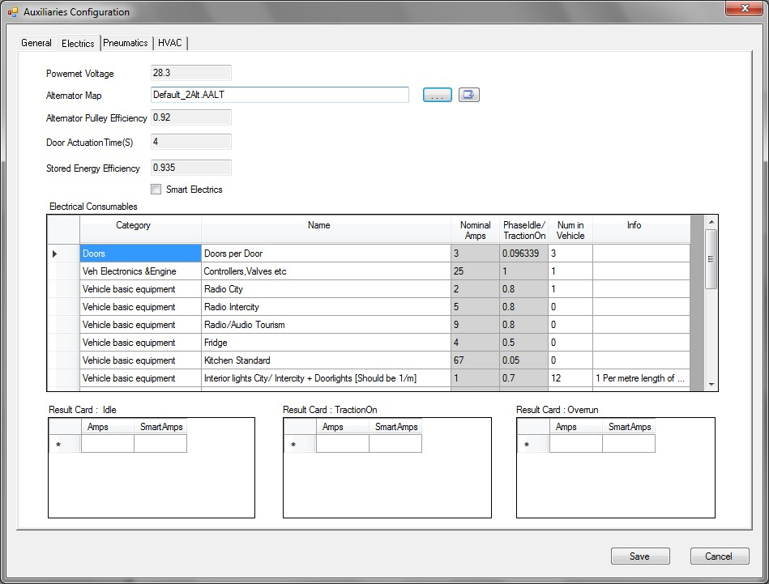

Advanced Auxiliaries Editor

Description
The Advance Auxiliaries Editor File (.aaux) defines all the
auxiliary related parameters and input files like Alternator and Compressor
Maps and HVAC steady state model outputs.
The Advance Auxiliaries Editor contains four tabs/sub-modules where the
different advanced auxiliary types can be configured:
· General
· Electrics
· Pneumatics
· HVAC
Sub-modules
General
Currently empty – reserved for potential future expansion.
Electrical
The “Electrics” tab defines various parameters
for electric auxiliaries used on the vehicle.
Pneumatic
The “Pneumatic” tab defines various pneumatic
auxiliaries data and pneumatic variables
HVAC
The “HVAC” tab defines the steady state output
values, which can also be loaded via the Steady State Model File (.AHSM)
Important notes
Note that the cycle file name used should ideally respect the following syntax to be correctly associated with the pneumatic actuations map (.apac), otherwise the number of actuations will be set at 0 by default:
· “AnyOtherText _X_Bus.vdri”, with “X” = “Urban”, “Heavy urban”, “Suburban”, or “Interurban”
· “AnyOtherText_Coach.vdri”
Some flexibility in syntax is allowable (the model looks for ‘Bus’, ‘Coach’, ‘Urban’, etc. in the file name), meaning that the standard default cycles are fully/correctly supported. However, for newly created cycles (i.e. for use in Engineering Mode) it is recommended to follow the above convention to guarantee correct functionality.
File Format
The file uses the VECTO JSON format.
The new file types have also defined to support the new Advanced Auxiliaries
module in VECTO include:
|
File EXT NAME |
Storage Type |
Description |
|
.AAUX |
JSON |
Overall configuration information for Electrical, Pneumatic and HVAC. Top of the tree for Advanced Auxiliaries |
|
.AALT |
CSV |
Advanced Combined Alternators: Contains combined map plus source maps. |
|
.ACMP |
CSV |
Advanced Compressor Map. |
|
.APAC |
CSV |
Pneumatic Actuations Map: Stores number of actuations per cycle |
|
.AHSM |
JSON |
Stores Steady State Model results, and also the configuration which resulted in the final result. UI to calculate various heat/cool/ventilate properties resulting in Electrical and Mechanical Power as well as cooling based on environmental conditions. |
|
.ABDB |
CSV |
Bus Parameter Database: Contains a list of the default parameters for different buses. |
|
.AENV |
CSV |
Stores a number of environmental conditions to be used by HVAC model when in batch-mode. |
Controls
 Open
file browser (blank field) or open editor (file present) for Alternator Map or
HVAC Steady State Model setup.
Open
file browser (blank field) or open editor (file present) for Alternator Map or
HVAC Steady State Model setup.
 Open
file
Open
file
Save and close
file
 Cancel
without saving
Cancel
without saving